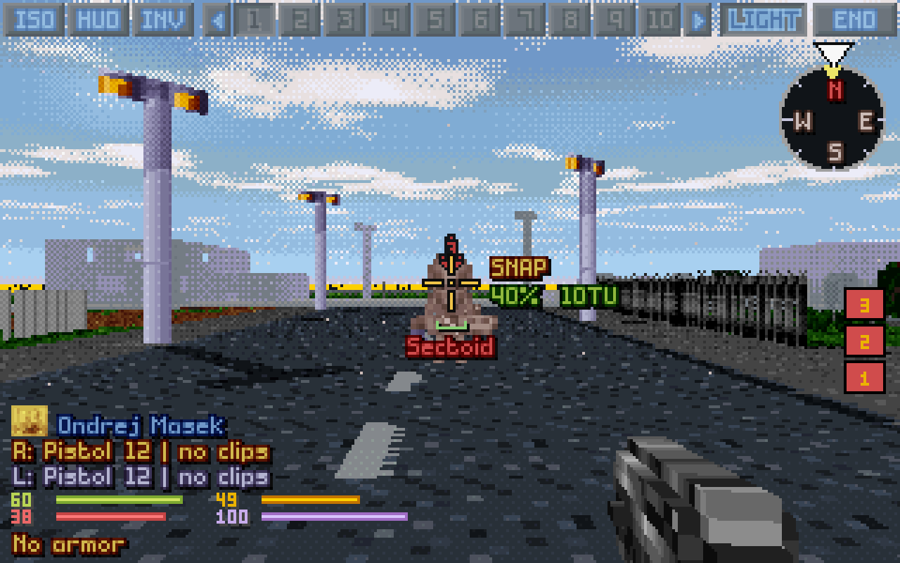
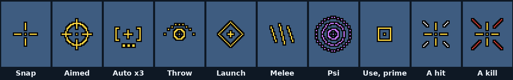
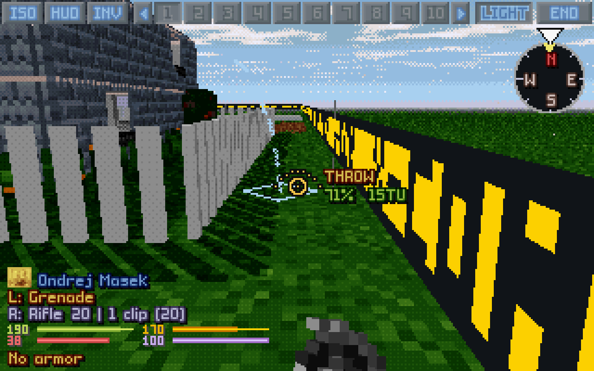

OpenXcom3D is OpenXcom Extended with a first-person 3D battlescape. The ready builds need no compiling and nothing installed: download one, give it your copy of the original game, and press F8 in a battle. This page walks you through it for each system, then has everything for playing: every key, every setting and how it plays, what's on the screen and every feature in pictures.
Rather build it yourself? The build guide does that, step by step.
> Press F8 to enter the battlescape
About 5 minutes
About 12 MB to download
Your own copy of UFO or TFTD
Live · soldier cam

A terror site in 3D: a Sectoid down the street, two pistols in hand.
Get it running
Play on:
On Linux there are two downloads, the same game in two wrappings: an AppImage, one file to run, and an archive to unpack anywhere. Either runs on any 64-bit Linux from 2021 on (Ubuntu 22.04 and newer, Debian 12, Fedora, Arch and the like) and brings its own libraries. Pick your system in the bar above, and the page shows only its steps.
On Windows it's a zip: unpack it into a folder of yours and start play.bat. It runs on 64-bit Windows 10 and 11 and brings its own libraries; nothing is installed.
The Steam Deck runs the Linux download. You set it up once in Desktop Mode, add it to Steam, and play it in Game Mode with a controller layout made for it.
The macOS app is a first, untested build: it is made and started on GitHub's Macs for every change, but nobody has played it on a real Mac yet. Reports are very welcome.
1
Have the original game
You need your own copy of X-COM: UFO Defense (UFO: Enemy Unknown) and/or X-COM: Terror From The Deep: from Steam, from GOG, or the old CDs. Nothing of it comes with OpenXcom3D.
What the game needs is the folder with GEODATA, GEOGRAPH, MAPS and UFOGRAPH directly in it. You don't need to run the original game, or DOSBox: OpenXcom3D plays its files itself, and never changes them.
~/.local/share/Steam/steamapps/common/X-COM Terror from the Deep/TFD
(Steam as a Flatpak keeps them under ~/.var/app/com.valvesoftware.Steam/, as a Snap under ~/snap/steam/, and a second library on another disk wherever you put it. All of them are found.)
C:\Program Files (x86)\Steam\steamapps\common\X-COM Terror from the Deep\TFD
From Steam, it's in your Steam library; from GOG, the app in Applications keeps the DOS game inside. Both are found.
Installing it with Steam on Linux: both are Windows games. If Steam shows no Install button for them, switch on Steam Play (Steam → Settings → Compatibility, or the game's Properties → Compatibility). You only need its files on the disk: you never start it from Steam.
OpenXcom3D-<version>-x86_64.AppImage: one file, the simplest. Its saves and options live in ~/.local/share/openxcom3d.
OpenXcom3D-<version>-linux-x86_64.tar.gz: a folder to unpack. Everything stays in it, its saves too (its user folder), and it comes with an installer that adds a menu entry.
From the latest release, take OpenXcom3D-<version>-windows-x86_64.zip.
In Desktop Mode (Steam button → Power → Switch to Desktop), open the latest release in the browser and take OpenXcom3D-<version>-linux-x86_64.tar.gz, the archive: it holds the controller layout too.
The Mac app isn't on the release page yet. It comes from the automatic builds: open the latest run of Build and, under Artifacts, take macos-release (that needs a free GitHub account; each run keeps it for 30 days). Inside is OpenXcom3D-<version>-macos.zip, for Apple silicon and Intel, macOS 11 and newer.
3
Unpack it and start it
The AppImage
Make it executable (in a file manager: Properties → Permissions → Allow executing as program), then double-click it. Or in a terminal, where you downloaded it:
Unpack it anywhere (a file manager's Extract here does it) and run play.sh in it:
Terminal
tar xzf OpenXcom3D-*-linux-x86_64.tar.gz
cd OpenXcom3D-*-linux-x86_64
./play.sh
Or let its installer put it in ~/Games/OpenXcom3D, with a menu entry: python3 install.py --desktop in that folder. It asks where your game data is, and finds Steam's by itself.
Unpack the zip (right click → Extract All) into a folder of yours: Documents, the Desktop or C:\Games. NotProgram Files: the game keeps its saves and options in its own user folder, and Windows doesn't let it write there.
Then double-click play.bat in that folder.
"Windows protected your PC": the game isn't signed, so Windows asks the first time. Click More info, then Run anyway.
Unpack the archive into ~/Games (in Dolphin, the file manager: right click → Extract → Extract archive here). Then double-click play.sh in its folder and choose Execute, once, to check that it starts and finds your game.
Into Game Mode
In Steam (still on the desktop): Games → Add a Non-Steam Game to My Library → Browse, set the file type to All Files, pick play.sh and add it.
The controller layout: run steamdeck/add_controller_layout.sh from the game's folder once (double-click → Execute). It closes Steam for a moment, adds the layout and sets it for your OpenXcom3D shortcut, and starts Steam again.
Back to Game Mode: OpenXcom3D is in your library under Non-Steam, playing full screen with the layout. Steam + X brings up the keyboard.
Unpack the zip and move OpenXcom3D.app where you like, Applications for instance.
The app is signed ad hoc, not by Apple, so macOS stops it the first time. Open it once, then go to System Settings → Privacy & Security and click Open Anyway. Or in Terminal:
After that it opens like any other app. Its saves and options live in ~/Library/Application Support/OpenXcom3D.
4
Give it your game data
The first time, it looks for your games by itself and links them in: a UFO or TFTD folder next to it (on Linux and the Mac, in your home folder too), and your Steam libraries. Then it starts the game it found, UFO if both are there. If it finds none, it says where to put them.
To give it a game it didn't find (a GOG or CD copy, or Steam somewhere it doesn't look), put the game folder from step 1 where it looks, named UFO (for UFO Defense) or TFTD (for Terror From The Deep):
For the archive
Into its user folder, a link is enough (a copy works too; a UFO folder next to play.sh is found as well). In the unpacked folder:
Copy the game folder into the OpenXcom3D folder (next to play.bat) and rename it UFO or TFTD. play.bat links it into user\ the next time it starts (a directory junction: no administrator needed, and the data stays as it is).
Steam's own folder, and every other Steam library it lists (a second disk too), are found without that.
Steam's games are found by themselves, on the internal disk and on the SD card. For another copy, put the game folder next to play.sh as UFO (or TFTD), in Dolphin: copy it there and rename it.
Copy the game folder to ~/Library/Application Support/OpenXcom3D/UFO (or TFTD), or put it next to the app as UFO. The app tells you in a window if it finds none.
It should look like this, the game's folders directly inside (not one folder deeper):
UFO/GEODATA the Geoscape's data
UFO/GEOGRAPH its pictures
UFO/MAPS the battle maps
UFO/UFOGRAPH the battle's pictures, and the rest of the game's folders beside them
Both games? Give it both folders. It starts with UFO; to play TFTD, pick Terror From The Deep under Options → Mods.
5
Into 3D
Start a campaign, or for a quick look a New Battle from the main menu. In the battle, press F8: you're in your soldier's eyes. F8 again goes back to the map.
Look with the mouse, walk with WASD, jump with Space; every step costs its time units, as on the map.
Fire with the left mouse button; J picks the fire mode, R reloads, G switches hands.
C frees the cursor for the buttons, Tab goes to the next soldier, I opens the inventory, H shows the game's own HUD.
Every key and setting (there are many, all under Options → 3D VIEW) is below, with what each means for how you play.
If something's wrong
What people run into, and what to do. Anything else: open an issue, with the openxcom.log from the game's profile folder.
It says it needs the data of the original game
It found no game folder. Put yours where step 4 says, named UFO or TFTD, with GEODATA, GEOGRAPH, MAPS and UFOGRAPH directly in it: not the folder one up (Steam's XCom UFO Defense), and not one down.
F8 does nothing, and there's no 3D button
The OpenXcom3D mod is off. Open Options → Mods and switch on OpenXcom3D - First-Person View. (A new profile has it on; if you switched it off, it stays off.)
A new version: how do I keep my saves?
The AppImage keeps them in ~/.local/share/openxcom3d, for every version. With the archive they're in its user folder: copy that folder's xcom1 (UFO) or xcom2 (TFTD) folder, and options.cfg if you like, into the new version's user folder.
They're in the user folder of the old version: copy its xcom1 (UFO) or xcom2 (TFTD) folder, and options.cfg if you like, into the new version's user folder.
They're in the old version's user folder: copy its xcom1 (UFO) or xcom2 (TFTD) folder into the new version's. Point your Steam shortcut at the new play.sh (its Properties), and run steamdeck/add_controller_layout.sh again for the new version's layout.
They stay in ~/Library/Application Support/OpenXcom3D, for every version.
It says the system is older than glibc 2.34, or lacks libGL.so.1
The ready build needs a Linux from 2021 or newer; on an older one, build it from source. libGL.so.1 comes with the graphics drivers: libgl1 on Debian and Ubuntu, libglvnd on Arch, libglvnd-glx on Fedora.
The window closes at once, with an X error about GLX
The system's OpenGL is broken. The game runs without it like this:
On a disk that can't hold a directory junction (FAT32, exFAT, a network drive), play.bat copies the game folder into user\ instead. That's fine; it takes a little space, and the original stays as it is.
Has it been played on a real Windows?
Every change is started and checked on a real Windows by the automatic builds (the game starts, play.bat finds the games in Steam), and battles are played under Wine. Reports from a real Windows machine are very welcome.
Start here
In a battle press F8: you're in your soldier's eyes. F8 again goes back to the map, any time.
Look with the mouse, walk with WASD: every tile costs its time units, as on the map.
Click to fire at the crosshair; ZXV (or the wheel) pick snap, aimed or auto.
C frees the cursor to click the buttons; H brings the map's whole bottom HUD into 3D.
Tab goes to the next soldier, Backspace ends the turn.
Esc → Options → 3D VIEW has the settings and the keys, from the main menu or in a battle.
Two ways to play
One setting decides how shots work: FPS-style shooting (easier). Everything else (time units, energy, damage, line of sight, reaction fire, the aliens' minds) is the original game's either way.
The game's own targeting the default
The game's own accuracy roll; the hit chance shows by the crosshair, as the map's cursor shows it.
Shots go for the exact point under the crosshair (or its tile, with Aim at exact point off), from the game's own muzzle points; "No line of fire" where the game says so (the laser shows it dimmed first).
The accuracy line: how far a successful roll strays.
Snap, aimed and auto as in the game.
What you can do from a tile in 3D is what you can do on the map: switching with F8 never changes a shot.
FPS style FPS-style shooting on
No dice: rounds fly along the crosshair with a spread (firing skill and kneeling tighten it), recoil lifts your aim, the bloom grows as you fire.
Each round leaves from your eye, so what you see past a corner, you can hit; and hits whatever is in the way.
Snap = one round from the hip, aimed = one tight round, auto = a burst, hold the trigger for more.
Rounds fly at a bullet's pace.
Your skill decides more, the soldier's less: relaxed, and a different game.
Settings that bend the rules a little
Each a setting, so you choose: Jump over low obstacles (vault a fence for the walk), Falling (step off a ledge), Lean shots and Lean (shoot from the side of your tile), Akimbo, Melee hits walls and downed, Force arcing shots and Force blocked shots (as Ctrl on the map), Turning costs TU off (free turns), and the Doom cheats. Everything else only changes what you see.
Keys
The defaults: every one can be rebound in Options → 3D VIEW → Controls (click its row, press the new key; a right click clears it).
Getting around
Key
What it does
How it plays
F8
Switch between the isometric map and 3D (or the ISO/3D button). Back on the map it's centred on your soldier.
Switch whenever you like, even mid-turn: the battle is the same one.
WASD
Walk and step sideways in real time. Each tile costs its normal time units; walking into a door opens it. On a lift or a ladder, or flying, W while looking up climbs and looking down goes down.
Free movement can stand you anywhere in a tile, which matters for peeking and lean shots.
Numpad 8 2 4 6
One tile ahead, back, left or right, almost at once, as a step on the map; two together make a diagonal. 79 snap-turn 45°.
Tile-exact moves when you count time units.
Caps Lock
Sprint on/off: every step is the game's run (Ctrl on the map). SPRINT shows under the compass.
Three quarters of a walk's time units, half as much energy again: cross open ground fast.
`
En passant on/off: an enemy coming into sight no longer stops the walk (as Shift on the map). ENEMY SPOTTED still shows.
Lets you finish a dash, at your own risk.
Space
Jump: a free hop; walking into something low (a fence, a crate, up to waist height) vaults over it.
A small bend of the rules (setting Jump over low obstacles).
Page UpPage Down
Fly up/down, ride a grav lift, climb a ladder. Off a lift, Page Up switches flight on, Page Down on the ground off. Purple arrows with LIFT PLATFORM show where a lift goes.
B
Suit flight on/off (flying armor; SWIM under water).
O
Open the door you look at without walking through it, if it's in reach.
Look before you step into a room.
(set a key)
Grab the item at your feet into a free hand, in 3D and on the map; with several items or no hand free, the inventory opens.
Give it a key on the 3D keys page: it has none.
Looking
Key
What it does
How it plays
Mouse
Look around, all but straight up and down; the soldier turns with you for free (or by the rules: Turning costs TU).
←→↑↓
Turn left / right, look up / down.
Home
Look straight ahead, the way the soldier faces (the map's centre key).
,.
Snap turn 45° left / right.
1 … 0
Turn to visible enemy 1 to 10 (or click the red enemy buttons).
Find every alien in sight in one key.
Left Shift + A / D, held
Lean out left / right to peek round a corner. Off until the setting Lean is Peek or Tilt; Lean left and Lean right can also get keys of their own. The eye moves up to six voxels; a shot from a lean leaves from that side.
You see the street round the corner; who is seen is still the game's call.
U or the right button, held
Zoom: the view glides in four times closer (setting Zoom). SCOPING shows how far.
Only the picture changes: aim and hit chance stay the same.
Left Alt, held
Show facing: a ring round every unit in sight with an arrow the way it faces, in its side's colour.
Where an alien looks decides whether it reacts to you.
N or Scroll Lock
Night vision on/off, with night vision gear (Scroll Lock: the game's own key for it).
F
The flashlight on/off (setting Flashlight).
Only the 3D view is lit: aliens don't see you any better for it.
Fighting
Key
What it does
How it plays
Left button
Fire at the crosshair in the current fire mode.
Wheel / J
Previous / next fire mode: snap, aimed, auto, launch, melee, psi, use, throw, prime.
ZXV
Snap / aimed / auto shot.
In FPS style: snap = one round from the hip, aimed = one tight round, auto = a burst, hold the trigger for more.
G
Switch hand: right, left, and the built-in weapon, each that gives something to use.
Y
Akimbo off, and back on to the kind the setting Akimbo says (Full or One-hand); with the setting Off it does nothing.
Two guns: more rounds, each 30% less accurate. Off to take an aimed shot.
Akimbo style (unbound)
Switch two guns between taking turns round by round and firing at once (Akimbo volley).
Ctrl+Shift + click
With a spray weapon's auto shot (X-Com Files' miniguns): mark the spray burst's points, as on the map.
Right button
Cancel the current action, or forget a target marked for Confirm fire; with nothing to cancel, hold to zoom (with a free cursor: hold and drag to look round).
T
Throw a tactical flare (setting Unlimited tactical flares).
Lights the 3D view only.
Insert
The Doom cheats off, and the same ones back on.
The screen
Key
What it does
How it plays
C or the middle button
Mouse look ↔ free cursor, to click buttons and hover soldiers for their cards. With Middle click identifies a middle click on a unit shows it.
H
The classic HUD on/off: every button of it works in 3D.
The map's whole bottom bar, if you prefer it.
Wheel over a soldier's button
With the cursor free: steps the soldier's card, or the SOLDIER CAM, through the squad one soldier at a time (over ◀ and ▶ it scrolls the bar).
Look through every soldier's eyes in a few turns of the wheel.
P
The 3D HUD hidden; again, the crosshair too (a clean view); again, all back. On the map: the map camera on/off.
F7
The frame counter on/off (the game's key).
The game's own keys, in 3D too
Key
What it does
How it plays
K
Kneel / stand: the view drops to kneeling height.
Kneeling steadies the aim, in either style.
I
Inventory.
R
Reload.
QE
The left / right hand's action menu.
L
The suit light: the game's personal light for the whole squad.
Unlike the flashlight it lights your tiles by the game's rules: aliens see you more easily at night.
Tab
Next soldier; the 3D view looks through them. Previous soldier has no key until you give it one: click ◀ in the top bar.
M
The minimap, on your soldier.
Backspace
End turn.
F5 / F9
Quick save / load.
The classic HUD in 3D
H shows the game's own bottom HUD over the 3D view with a free cursor; every button works. The map level buttons look 30° up or down, the centre button turns the view back to the way the soldier faces, the red enemy buttons turn the view to that enemy (right click: switch to the soldier who sees it), and a shot picked from a hand's menu becomes the fire mode.
On the Steam Deck
The controller layout made for OpenXcom3D maps all of this to the Deck's buttons: see the Steam Deck steps above.
On screen
The 3D view's heads-up display, its icons and its messages.
12345678
The heads-up display, numbered below.
ISO, HUD, INV. The map and back, the classic HUD, the inventory.
The squad. Your soldiers in the middle of the top bar: click to select, hover for the card with a live helmet camera, right click for the SOLDIER CAM; ◀ and ▶ for the previous and next. A skull marks the dead, a caduceus the unconscious, an orange alien face one under mind control.
LIGHT, END and the rest. The suit light, the end of the turn, and when the soldier has them NIGHT VISION and SUIT FLY.
The compass. Your heading under the white arrow, the way the soldier faces (a yellow triangle), and a shot's turn and its cost.
The crosshair. Its shape is the fire mode; the accuracy line under it; the shot info beside it (mode, hit chance, time units, the other costs below); the name of the unit pointed at under all that.
The soldier. Rank and name, what matters now (KNEELING, BURNING, WOUNDS, PANIC), a line per hand with its ammo (a cannon or launcher says the loaded kind: [AP], [HE], [IN]), the four stat bars.
The weapon in hand. Built in 3D from its inventory picture, its barrel on the line to the crosshair; your shots leave its muzzle.
The enemies in sight. A red button for each, a red number over its head: click the button, or press 1 to 0, to turn to it.
The crosshair: one shape per fire mode, ticks for a hit

Snap An open cross
Aimed A scope ring
Auto Brackets, a dot per round
Throw An arc onto a ring
Launch A diamond
Melee Claw marks
Psi Rings spreading out
Use, prime A box
A hit White ticks on the diagonals
A kill Longer red ticks
Signs and messages
The crosshair's colour
Yellow: you can do it. Red: you can't (time units, ammo, range). Purple: psi. Grey: not your move.
The shot info
SNAP 40% 15TU: the fire mode, the hit chance (green; yellow with range or sight penalties; red when it can't be taken) and the time units. With two guns DUAL (round by round), VOLLEY (both at once) or IN TURN (an arcing pair, gun after gun) in front.
The other costs
EN 6 STUN 2 under the shot info: energy, health, stun, morale, mana. A cost you can't pay is red, and the game would refuse the action.
The accuracy line
A green line under the crosshair, a notch up at each end: as far to either side as a successful roll can stray (the game's own targeting), or the spread in FPS style, widening as you fire. Grey when it's not your move.
The trajectory
A light cyan arc for a throw or an arcing shot, a diamond where it lands; a thin red laser for a straight shot, a bright dot where it meets something. Yellow: forced (it goes whatever is in the way). Dim dotted red: the game will refuse it.
Unit names
The unit under the crosshair, by name or race: green X-COM, red aliens, yellow civilians.
Downed unit icons
Over an unconscious body: a flame (burning), a drop (bleeding), a bolt (shock), Zz (out cold).
Hitboxes and facing rings
Outlines of what a shot can really hit (setting Hitboxes); with Left Alt a ring and arrow round every unit in sight, the way it faces.
Enemy markers
Red numbers over the aliens in sight: the keys 1 to 0 turn to them.
Lift arrows
Purple arrows and LIFT PLATFORM on a grav lift or a ladder: the ways it goes. Arrows left of the compass show where W climbs.
Under the compass
SPRINT (green while running, grey when the soldier can't), EN PASSANT, TURN 1 TU, SHOT +1 TU, NO TU.
At the right
SCOPING 2.6x while zooming.
Warnings
UNSAFE LANDING! PUSH AGAIN at a ledge over ground no one can walk on; the game's own warnings (No Line of Fire!, Out of Range!), on the warning line.
Banners
ENEMY SPOTTED!, HIDDEN MOVEMENT, BURNING, YOU HAVE A MENTAL BREAKDOWN, BERSERK, TURNED INTO A ZOMBIE.
Camera cards
A soldier's helmet camera popping up: TARGETED, HIT, MIND CONTROLLED, FIRING, WATCHING, DECEASED, UNCONSCIOUS. A blinking red dot and now and then a bad signal or static: it's a camera, not your view. SIGNAL LOST when the soldier you look through falls.
The info panel's right side
DOOM MODE while the cheat is on (IDDQD, IDKFA or both in its place with those); with IDDQD the stats turn silver.

The trajectory: a grenade's arc, and where it lands.
Settings
Options → 3D VIEW → Settings, from the main menu or in a battle: one list there, in this order, grouped here. A left click flips YES / NO or raises a number, a right click lowers it; the default is in bold.
View and camera
Setting
Choices
What it does
How it plays
Soldier camera preview
YES / NO
Hovering a soldier's button shows their card with a live helmet camera. A right click opens their SOLDIER CAM, big.
See what each soldier sees without leaving the one you play.
Map camera
Off / Small / Medium / Large
On the isometric map, the selected soldier's helmet camera in a window at the top left; it turns to your target while you aim.
The map with a soldier's eyes beside it: aim on the map, check the view.
Mouse sensitivity
1 to 20 (5)
How fast the view turns with the mouse.
Invert mouse
YES / NO
Mouse forward looks down, as in a flight simulator.
Field of view
50 to 110 (75)
How wide the 3D view is, in degrees.
Wider shows more around you; narrower makes far targets bigger.
Zoom
YES / NO
Hold U or the right button to look four times closer.
Only the picture: the shot and the hit chance stay the same.
Start battles in 3D
YES / NO
Begin every battle in the first-person view.
Alien turn in 3D
YES / NO
Stay in 3D during the aliens' turn, through your last soldier's eyes. NO: the map for their turn.
Aliens' turn cameras
YES / NO
In their turn the view cuts to where the action is: a soldier firing back, the nearest soldier who sees a moving alien, a soldier shot at by an alien nobody sees; helmet camera cards pop up for soldiers shot at, hit or mind controlled.
Camera when a soldier falls
YES / NO
With Aliens' turn cameras, in their turn: a soldier going down out of view pops up their helmet camera card, DECEASED or UNCONSCIOUS.
Eye height lowered by
0 to 6 voxels (3)
Sits the 3D camera lower, so rooms feel less cramped. What the soldier sees by the rules doesn't change.
Head bob
YES / NO
The view bobs with the soldier's steps.
Off if it makes you queasy.
Movement
Setting
Choices
What it does
How it plays
Turning costs TU
YES / NO
NO: the soldier turns with the view for free. YES: the head turns 45° for free, beyond that the soldier turns at the game's cost, as on the map.
YES is the classic rule: facing costs time units and decides reaction fire. NO is relaxed play.
Movement
Free / Tiles
Free: walk anywhere, stepping into the next tile when you cross into it. Tiles: a press walks one tile.
Tiles feels like the map; Free lets you stand to one side of a tile (lean shots, peeking).
Walking speed
1 to 8 tiles a second (4)
How fast the soldier walks in 3D. Every tile still costs its time units.
Flight cost per level (TU)
0 to 24 (0)
What a flying (or swimming) soldier pays to rise or sink a level in 3D.
The original game charges about 8.
Flight cost overrides rules
YES / NO
YES: every flyer pays the cost above. NO: each pays its armor's own cost.
NO keeps the game's slower flyers slow.
Jump over low obstacles
YES / NO
Space while walking into something low vaults over it, paying only the walk.
Bends the rules a little: on the map a fence makes you walk round.
Falling
YES / NO
Walk off a ledge and fall to the level below, hurt by the height.
A shortcut the map never offers, at the price of the fall.
Check the landing
YES / NO
A step off a ledge onto ground no one can walk on (a moat, the sea) or where no step leads on stops at the edge: UNSAFE LANDING! PUSH AGAIN.
Keeps a soldier out of places they could never leave.
Aiming and combat
Setting
Choices
What it does
How it plays
FPS-style shooting (easier)
YES / NO
NO: the game's own accuracy, its hit chance by the crosshair. YES: FPS-style shooting, far easier: rounds along the crosshair with a spread, recoil, from your eye.
A gun in each hand fires both on every shot, the two taking turns round by round, each 30% less accurate, for the dearer gun's shot and a tenth.
More rounds for the time units, worse aim; no aimed shots with two guns.
Akimbo volley
YES / NO
NO: two guns take turns round by round, each round resolved before the next. YES: both at once, a volley, their hits landing together.
In turns a burst can kill one alien and go on to the next.
Lean shots
YES / NO
Standing to one side of the tile shoots from that side: the game's own off-centre origins.
Peek and shoot round a corner (with the game's own targeting; FPS style always shoots from the eye).
Lean
Off / Peek / Tilt
Left Shift with A or D leans out to peek; Tilt tilts the view too.
Shows round corners; a shot from a lean leaves from that side.
Melee hits walls and downed
YES / NO
A blow at the wall, door or object under the crosshair strikes it; a blow can hit a body lying in front of you.
Break through a wall with a hammer, as the map's terrain melee does in some mods.
Melee hits floors
YES / NO
With terrain melee on: the floor or ceiling you aim at takes the blow too.
Break through the floor at your feet or the ceiling above.
Aim at exact point
YES / NO
Shots go for the exact point under the crosshair (on the open sky, the air on its line). NO: for its tile, as in the original.
The game's accuracy applies either way.
Show trajectory
Arcs / All / Off
While aiming, the path the next throw or shot will take: a cyan arc for throws, a red laser for shots (All).
No surprise "No line of fire": a refused shot's laser shows dimmed.
Confirm fire
YES / NO
The first click marks the target and shows its path; a second click fires.
Never waste a shot on a slip of the mouse.
Force arcing shots
YES / NO
An arcing shot the game would refuse fires anyway, as with Ctrl held; its path shows yellow.
Force blocked shots
YES / NO
A straight shot with no line of fire fires anyway along the line to the crosshair, as with Ctrl held.
A round may clear thin cover, or hit it.
Shotgun pellets in flight
YES / NO
A shotgun's pellets fly beside its round, in 3D and on the map.
Each pellet on its own
YES / NO
A shotgun's pellets and an akimbo volley's two rounds each land on their own: none lost when the lead pellet leaves the map.
OXCE's "shotgun void" closed: shotguns hit as their pellets say.
Full sprite hitboxes
YES / NO
Units are hit, and seen, wherever their full sprites show (a card facing whoever fires), for everyone, in 3D and on the map.
What you see is what you hit: shots pass between legs and hit arms.
Auto-equip guns first
YES / NO
Soldiers with no saved loadout take guns before melee weapons, in the mod's item order. NO: OpenXcom's own auto-equip.
In XPiratez or X-Com Files OXCE often hands out staffs and swords first.
Quick deaths
YES / NO
Units killed or knocked out are down at once: bursts fire on, falls play on their own and together, in 3D and on the map; your soldier falls on their camera card while the view goes on to the next.
Doom-style pace: chaingun through a group without waiting for each fall.
Unlimited tactical flares
YES / NO
T throws a red flare at the crosshair, free and as often as you like.
Lights the 3D view only.
Night vision needs gear
YES / NO
Only soldiers with night vision gear (power suits, flying suits...) get NIGHT VISION in 3D. NO: everyone.
YES keeps the night dark for the unequipped.
Graphics and light
Setting
Choices
What it does
How it plays
Smooth lighting
YES / NO
The battle's light blends smoothly from tile to tile. NO: tile by tile, as the map shades it.
Shadows
YES / NO
Ray-traced shadows from the sun, lamps and your flashlight, and under every unit.
Off on slow machines.
Distance haze
Normal / Light / Clear
How soon far terrain fades into the haze.
Flashlight
On / Dynamic / Off
The 3D view's own light, on F. On: a wide beam from the shoulder, in the dark. Dynamic: a tight spot on the crosshair, day or night.
Lights only the 3D view: what the soldiers see by the rules doesn't change.
Smoke
Modern / Original
Modern: the game's smoke as soft see-through clouds, solid where your soldier can't see through. Original: the games' own smoke animation.
Either way units the game hides stay hidden.
Smoke opacity
5% to 80% (45%)
How solid smoke you can see through looks: the thinnest, thicker smoke more. Where your soldier can't see through it, it stays solid.
Lower it if smoke hides too much of the street; your soldier sees what the game says either way.
Night smoke opacity
5% to 80% (25%)
The same in the dark: on a night mission (lamp-lit or suit-lit smoke too), and by day on dark maps and in unlit rooms.
Lower if smoke at night is blinding.
Weapon in hand
YES / NO
The weapon in hand at the bottom of the view, built in 3D from its inventory picture, its barrel on the crosshair.
Sprite upscaling
Smooth + detail / Smooth / Off
Units, items and effects up close scaled the way pixel art scales well (xBRZ).
Unit size
80% to 100% (100%)
Soldiers, aliens, corpses and items drawn a little smaller, so tall sprites fit under low ceilings.
Only the picture: what shots hit stays the game's (see Hitboxes).
Muzzle flashes
YES / NO
Gunfire, hits and blasts flash. NO: no flashes, steady UFO lights, no camera glitches.
Off if flashing light bothers you.
Particles
All / Effects / Off
Effects: sparks, debris, smoke, fire, trails. All: also dust, fireflies, bubbles and weather.
UFO lights and aura
YES / NO
UFOs glow: steady hulls with pulsing lights, their own coloured light, evenly inside them, and an aura of motes outside; only once a UFO has been seen.
Inside a UFO the view stays sharp: its light only colours it.
Parts without shape
Lifts / All / Off
Parts the map draws with no shape in the game's data, shown as see-through ghosts: ladders, lift pads, the shops' racks, liquid over a floor, the rest of fences and catwalk gratings the game gives only a few voxels; low parts such as crops and rubble stand solid, as on the map, and a wheat field as a solid block.
Ghosts are only pictures: shots, sight and walking go through them as the game says.
Ghost opacity
10% to 100% (50%)
How solid the see-through ghosts look up close (lift pads, ladders, racks, catwalks, sludge); far off 60% of that.
See-through crops
Yes / No
Crops, flower beds and rubble without a real 3D shape, drawn solid as on the map, shown a bit see-through instead, so units in a field show.
See-through corpses
YES / NO
A corpse or item under the crosshair turns faint (at the ghost opacity) while you aim past it.
See past the big mods' tall corpses to what your shot reaches.
Discreet map edge
YES / NO
Small red dots along the map's edge instead of the yellow tape.
Pixel size
Auto / 1 / 2 / 3
Each ray colours a block of pixels: chunkier, much faster on big screens.
Auto: full detail up to 640×400, blocks of 2 above.
Frame rate limit
60 to 240, unlimited (60)
The game's own frame rate cap.
Raise it for a 120 or 144 Hz screen if your computer keeps up.
Frame counter
YES / NO
The game's frames-per-second counter (as F7).
HUD
Setting
Choices
What it does
How it plays
Crosshair
YES / NO
The crosshair; its shape tells the fire mode.
Shot info
YES / NO
The fire mode, hit chance and time units right of the crosshair.
Yellow: you can; red: you can't.
Expanded crosshair info
YES / NO
The action's other costs under it: energy, health, stun, morale, mana.
The big mods' weapons often cost energy.
Accuracy line
YES / NO
A green line under the crosshair, as wide as a shot strays to either side: the game's successful roll (its own targeting), or the spread (FPS style).
With the game's own targeting it is short: a hit strays little, a miss far; the hit chance says how likely each is.
Unit names
YES / NO
The name of the unit you point at, under the crosshair.
Stat bars
Scaled / Percentage / Game's own
How the time units, energy, health and morale bars read, on the map and in 3D. Scaled: one scale for all your units, so a 300-HP unit's bar shows its loss.
Two soldiers' bars stay comparable.
Hitboxes
Off / Aimed at / Blink / Always
Outlines the voxels a shot can really hit: the unit you aim at, or every unit in sight (blinking or always).
Sprites are often taller or wider than what can be hit.
Glowing outlines
YES / NO
The hitboxes and a throw's path glow.
Downed unit icons
Crosshair / Always / Off
Icons for an unconscious unit: burning, bleeding, shock, out cold.
Know whom to carry out first.
Compass
YES / NO
A compass at the top right: your heading, the way the soldier faces, and (with turning at a cost) how far the head turns for free.
Middle click identifies
YES / NO
A middle click on a unit opens the game's unit screen, as on the map.
Sound
Setting
Choices
What it does
How it plays
Dynamic music
YES / NO
Tenser music while aliens are in sight.
Hit, kill and swing sounds
YES / NO
A tick for a hit, a double tick for a kill, a swoosh for your swings, and your heartbeat once hurt below half health.
Cheats
Setting
Choices
What it does
How it plays
Doom mode (debug)
YES / NO
A cheat: in 3D the selected soldier never runs out of time units or energy; grenades go off in real time.
For testing and fun, a first step towards real time.
Doom IDKFA
YES / NO
Doom mode plus endless ammo.
Doom IDDQD
YES / NO
Doom mode plus invincible soldiers.
Doom prime on throw
YES / NO
In Doom mode a grenade is armed as you throw it. NO: priming pulls the pin, and the fuse burns in your hand.
Doom free grenades with airburst
YES / NO
In Doom mode a grenade flies wherever the crosshair points and bursts in the air if its fuse runs out.
Doom grenade fuse (seconds)
1 to 5 (3)
In Doom mode, how long a grenade burns.
Features
What there is to do in 3D, how it plays, and what it looks like.
FPS style: leaning out past a wall's end, the round leaves from the eye
With Aim at exact point a shot goes for the very voxel under the crosshair, or on the open sky for the air on its line. If the line from the gun is blocked, the game's other muzzle points are tried (left and right with OXCE's Off-centre shooting), then the game's own aim, as a click on the map does. The laser (Show trajectory: All) shows the line that will fire.
Keys Left button, ZXV, wheel
How it plays With the game's own targeting it is the map's rules with a finer click. In FPS style the round leaves from your eye: what you see past a corner, you can hit. With Full sprite hitboxes a unit is hit, and seen, where its picture shows: between the legs is a miss, a gun held out a hit.
The game's own targeting (left): a short line, as far as a hit strays. FPS style (right): the spread of a burst
A green line under the crosshair, a notch up at each end, as wide as a round can land to either side. With the game's own targeting: the farthest a successful roll can send the round, by the game's own roll. In FPS style: the spread 95% of the rounds land in, widening with the bloom as you fire.
How it plays A successful roll in X-COM strays little, mostly sideways; a miss strays far. The line shows the first, the hit chance how often you get it.
Akimbo on the map: two mini targets in each hand's box, in turn
A gun in each hand fires both (the setting Akimbo, Full or One-hand): round by round in turn, or at once as a volley, each its own burst, each 30% less accurate, for the dearer gun's shot and a tenth. On the map Ctrl+Shift+click a hand's weapon marks the pair.
KeysY, Akimbo style, Ctrl+Shift+click on the map
How it plays More rounds for your time units, worse aim; no aimed shots with two guns. In turn a burst can drop one alien and go on to the next.
The eye moves up to six voxels to the side and a little lower, stopping short of walls and of anyone in sight; with Tilt the view tilts too. A shot from a lean leaves from that side: the game's own off-centre point (its own targeting) or your eye (FPS style).
KeysLeft Shift + A / D
How it plays You see the street round the corner, but who is spotted is still the game's call: a peek never shows a hidden alien.
Walk freely or tile by tile, every tile at its time units. Space vaults low obstacles; walking off a ledge falls to the level below, hurt by the height. A step onto ground no one can walk on, or where no step leads on, asks first.
KeysWASD, numpad, Space, Caps Lock, `
How it plays Falls and vaults are shortcuts the map doesn't have (each a setting). Sprint costs less time and more energy; en passant keeps walking when an enemy shows up.
A flying suit: the arrow left of the compass lit yellow, W climbs
Ride a grav lift, climb a ladder, fly with SUIT FLY on: W looking up climbs, looking down sinks, each level paid as on the map. Purple arrows show the ways.
KeysPage UpPage Down, B, W looking up
Doors
Doors open as you walk into them, or with O from where you stand (the one you look at). They swing to where the game has them; UFO doors slide. Glass doors are seen through, while they swing too.
KeysO, or walk into it
How it plays Open a door without stepping into the room behind it.
The motion scanner held up: the sweep going out, two blips behind the soldier
Melee strikes what's under the crosshair: a blow swings, lunges and jolts. A medi-kit treats whoever you look at, next to you; aiming at nothing, yourself. The motion scanner is held up at the bottom of the view, turning as you look round, a ring sweeping out with a whoop and a pip for each movement it finds; the mind probe to its screen; priming opens the timer at once.
Anything in a hand can be thrown along the game's arc (the cyan path shows it). In Doom mode grenades burn in real time, and with free grenades fly wherever the crosshair points and burst in the air.
Night vision: the laser sight light in the goggles
Your flashlight (on F, wide or a tight spot on the crosshair), night vision with the gear for it, red tactical flares, and the game's suit light (L). Light and shadow come from lamps, the sun, your flashlight and flares; indoors (a roof overhead, or rock) no sun shines, and rooms are lit by their own light, as on the map.
KeysF, N, T, L
How it plays The flashlight and flares light only your view; the suit light is the game's, and lets aliens see your soldiers at night.
Modern smoke: soft see-through clouds, solid where the soldier can't see through
Modern: the game's smoke as soft clouds you see through, solid where your soldier can't see through by the game's sight rules. Original: the games' own animation, stacked thick there. Heat vision sees smoke thinner.
How it plays What you see through matches what your soldier sees through.
Killed in action: the picture turns red, then breaks into static, SIGNAL LOST
Every soldier's helmet camera, live: on their card, big as the SOLDIER CAM, or over the map (setting Map camera), with a blinking red dot, now and then a bad signal or static, worse on hard missions. With the cursor free, the mouse wheel over a soldier's button steps the card or the SOLDIER CAM through the squad. When the soldier you look through falls, the picture turns red and breaks into static: SIGNAL LOST.
Keys Hover a soldier's button; right click for the SOLDIER CAM; the wheel over a button; P on the map
How it plays See what each soldier sees; aim on the map with a soldier's eyes beside it.
The soldier looked through is down: the view goes on with the next one, while the fallen soldier's card, DECEASED, shows his last look
With Quick deaths a unit killed or knocked out is down at once: a burst fires on through it to whoever stands behind, several fall together, each fall on its own, at the game's pace, in 3D and on the map. When the soldier you look through goes down, their fall plays on their camera card while the view goes on to the next soldier at once.
How it plays The pace of a shooter: chaingun through a group without waiting for each fall.
Stay in 3D for the aliens' turn: the view cuts to a soldier firing back or to the nearest one who sees a moving alien; camera cards pop up for soldiers shot at, hit, mind controlled or going down.
XPiratez: the sewer's sludge, a soldier wading in it to the thighs
Some parts the map draws have no shape, or only a few voxels, in the game's data. They show as see-through ghosts of their art: ladders and lift pads, the shops' racks, the rest of fences, railings and catwalk gratings, and the surface of liquid over a floor (XPiratez's sewers). The game's own voxels stay solid.
How it plays Ghosts are pictures: shots, sight and walking go through them as the game says. Set how solid with Ghost opacity.
TFTD: ruins on the seabed, bubbles rising, light rippling over the sand
Terror From The Deep's sea rolls in waves, and where it reaches the map's edge it goes on past it. Under the water: bubbles, marine snow drifting down, and light rippling over the sand.
How it plays The particles are a setting (Particles), if you want the water clear.
A soldier at 60 morale of 100: the game's own bars (left), morale full; Scaled (right), what's gone shows
Bars that read: with Scaled a stat whose longest maximum won't fit shrinks for all your units alike, on the map and in 3D.
How it plays Two soldiers' bars stay comparable.
Performance
Pixel size 2 or 3 colours a block of pixels per ray, much faster on big screens; Shadows and Particles off help slow machines; the frame rate cap is the game's own.
Gallery
From the field: the battles in pictures, from UFO, Terror From The Deep and XPiratez. Click one for it at full size.
Field report 1.08 Terror From The Deep's sea past an island's edge, XPiratez's blunderbuss and two guns at once, a spray burst marked, akimbo in 3D and on the isometric map, a Gill Man on an island, and the map camera over the battle.
More from 1.08 The open sky at the map's edge, a peek past a corner in FPS style, the accuracy line, the landing warning by the sea, wading in XPiratez's sludge, the shop's racks as ghosts, a tilted lean, smoke, a grenade's arc.
Moments Under fire, a soldier cam at dusk, a sprint down an empty street, night vision, an airburst, a rocket in the street, aquanauts with vibro blades, the ruins on the seabed, and the end of a signal.